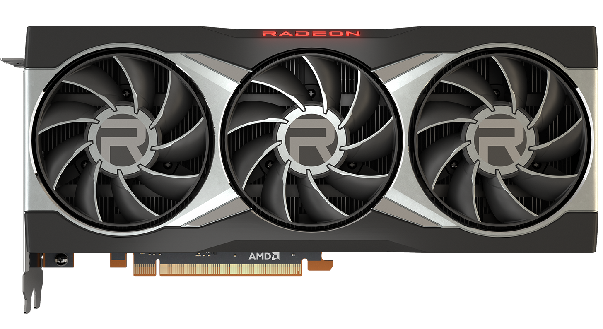
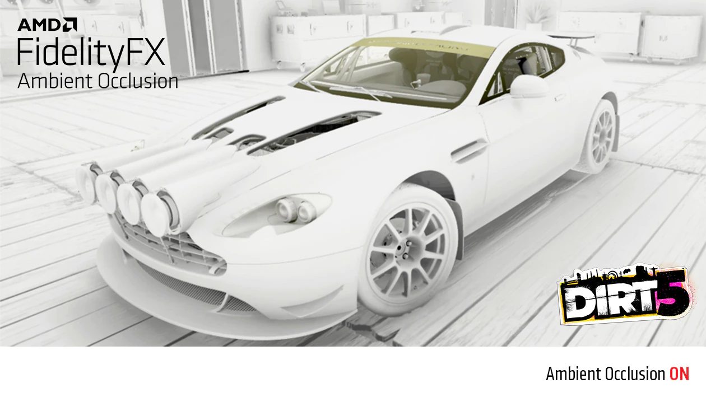
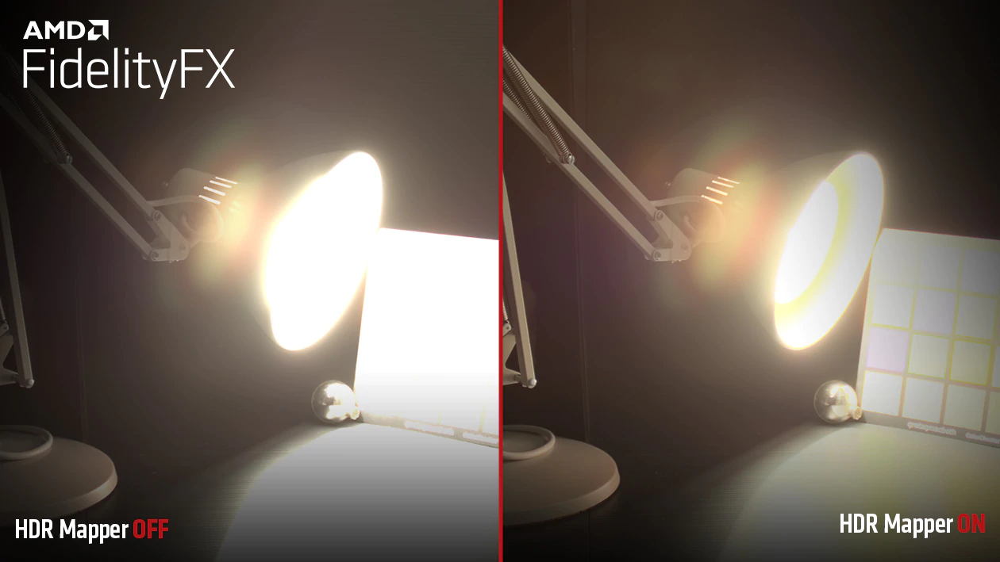
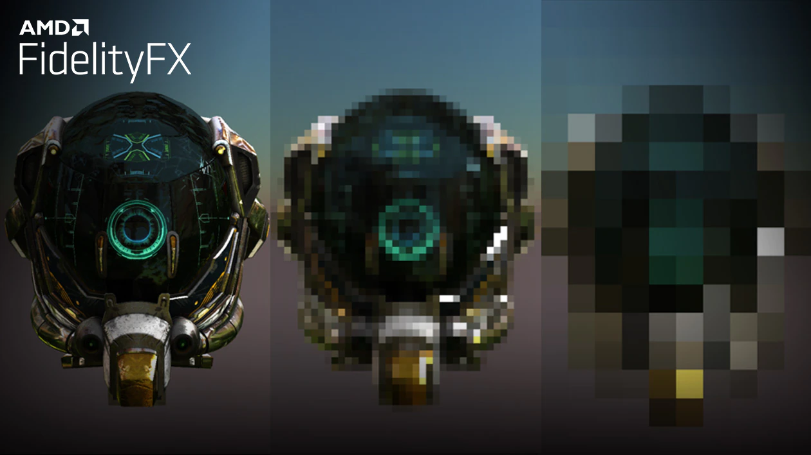

Advanced Micro Devices (AMD) est un fabricant américain
de semi-conducteurs, microprocesseurs, cartes graphiques
basé à Santa Clara (Californie). La compagnie est fondée
le 1er mai 1969 par un groupe d'ingénieurs et de dirigeants
de Fairchild Semiconductor. La flèche du logotype de la
compagnie dirigée vers la droite symbolise sa croissance
dans le « droit chemin ».
AMD occupe actuellement la deuxième place sur le marché des
processeurs graphiques (GPU) derrière Nvidia avec la série
radeon RX. depuis l'acquisition de ATI avec la sortie de la
4ème génération de leurs processeurs dénommé "Ryzen", il occupe
la deuxième place sur le marché des processeurs (CPU) derrière Intel.
Les produits AMD
Les cartes graphiques
AMD produit des processeurs graphiques, utilisées
majoritairement dans les PC, mais de plus en plus,
ses processeurs hautes performances sont utilisés
dans des machines de calcul professionnelles. Parmis
les modèles les plus vendus, on trouve la série de
GPU Radeon RX, dont le dernier modèle est la RX 6900xt,
sortie le en octobre 2020. La série Rdeon RX 7000 est
déjà prévue par AMD qui pourrait en annoncer la sortie
avant la fin de cette année
Performances
Année
modèle
fps en 1080p (FHD)
fps en 1440p (QHD)
fps en 4K (UHD)
image
2020
RX 6900xt
246
187
117
2021
RX 6800xt
230
176
100

2020
RX 6800
197
147
79
2021
RX 6700xt
163
122
70
2021
RX 6600xt
132
100
60
2021
RX 5700xt
122
91
54
2019
RX 5700
112
84
50
2020
RX 5600xt
105
78
46
2019
RX 5500xt
76
54
31
Les techonologies AMD
Stochastic Screen Space Reflections (SSSR)
Le Stochastic Screen Space Reflections est
une technique de calcul d'optique par ordinateur,
utilisée pour le rendu en synthèse d'image ou pour
des études de systèmes optiques. Elle consiste à
simuler le parcours inverse de la lumière : on
calcule les éclairages de la caméra vers les objets
puis vers les lumières, alors que dans la réalité la
lumière va de la scène vers l'œil. On obtient ainsi un
éclairage réaliste.
AMD l'a intégré à ces GPU avec l'arrivée de l'architecture
RDNA2, dotée de puce Radeon spécialisée. C'est une
technologie finalement similaire au ray-tracing d'NVIDIA
Mais là aussi, les beaux effets de lumière en jeu ont un prix :
une baisse de performance à cause de la puissance de calcul
requise. Cela se matérialise par une baisse
d'au moins 20% de fps en jeu.
Radeon Super Resolution (RSR)
A l'instar du DLSS d'NVIDIA, le RSR est une technologie
d'upscaling fonctionnant grâce à des tensores cores du
gpu. C'est à partir des RX5000 que la technologie a vu le jour.
Son objectif ? Augmenter jusqu'à 2 fois le nombre de
fps en jeu. Cette technologie fonctionne par un
upscaling de l'image : l'image est calculée à une
résolution inférieure et les pixels manquants sont
complétés par IA (Intelligence artificielle) grâce à
des tensor cores présents dans le GPU.
On arrive ainsi à obtenir une image de sortie de la
qualité voulue, mais en ayant utilisé moins de
puissance de calcul que pour l'avoir calculé "nativement".
Le résultat final est très proche du natif ce qui ne
gène pas nécessairement le visuel. Cette technologie
existe avec différentes intensité, allant de "qualité"
pour une image la plus complète possible à
"ultra performance" pour un maximum de FPS.
Le RSR est très utile pour pallier les problèmes de
performance causés par le SSSR.
Fidelity Super Resolution (FSR)
Concurrent du NIS d'NVIDIA, le Fidelity Super Resolution est
également une technologie d'upscaling de l'image qui permet
d'augmenter les performances du GPU, pour favoriser un
nombre de FPS plus élevé. Il ne fonctionne pas avec des
tensores cores et est compatible avec tous les GPU, même ceux d'NVIDIA.
L'image finale ainsi que les performances gagnées ne sont
pas aussi satisfaisantes qu'avec le DLSS, mais on obtient
une moyenne de 30% de fps supplémentaires en sacrifiant
assez peut la qualité d'image. Le FSR existe actuellement en version 2.0
Autres technologies
Fidelity Contrast Adaptive Sharpening :
contribue à améliorer la qualité visuelle en affinant des détails avec une mise à l’échelle optionnelle permettant de restaurer les détails perdus après l’application de l'antialiasing temporel du FSR
Fidelity Ambient Occlusion :
contribue de manière dynamique à améliorer l'apparence des objets en fonction de leur exposition à la lumière
ambiante

Fidelity Variable Shading :
Analyse les images afin d’optimiser le rendu dans le but d'obtenir de meilleures performances
Fidelity Denoiser :
contribue à l'amélioration de la qualité visuelle du ray-tracing en temps réel et d'autres effets dans les jeux
Fidelity HDR Mapper :
Amélioration du contenu HDR

Fidelity Downsampler :
optimisation des performances sur les textures

Fidelity Parallel Sort :
permet de retrier avec une baisse de performance moindre la disposition des pixels d'une image

.png)
.png)
.png)